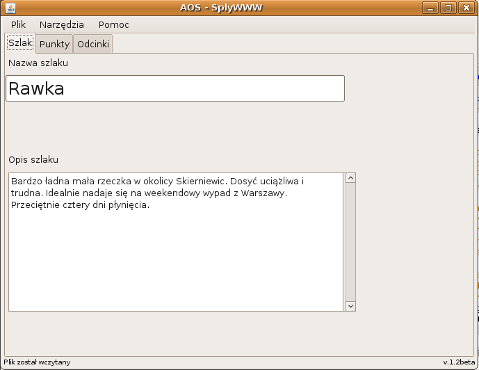
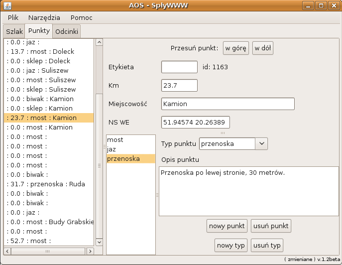

AOS to program napisany specjalnie dla SplyWWWu. Jego celem jest u³atwienie przygotowywania opisów nowych szlaków i podczas nanoszenia poprawek na ju¿ istniej±ce. Aplikacja jest napisana w jêzyku Java i operuje na plikach XML. Mamy nadziejê, ¿e korzystanie z niej jest dosyæ intuicyjne.
Pierwsze uruchomienie nale¿y rozpocz±æ od ¶ci±gniêcia z naszej strony najnowszej wersji programu W archiwum ZIP, znajduje siê plik AOS.jar, który jest g³ównym programem, oraz kilka pomocniczych bibliotek. Rozszerzenie JAR jest mo¿e trochê nietypowe, ale zupe³nie poprawne dla programów napisanych w Javie.
Do uruchamiania jakichkolwiek aplikacji Java niezbêdna jest zainstalowanie jest oprogramowania JRE (Java Runtime Enviroment), które mo¿na za darmo ¶ci±gn±æ ze stron producenta, czyli firmy Sun. Najpro¶ciej poprzez stronê www.java.com Ca³kiem mo¿liwe, ¿e ju¿ masz zainstalowan± Jave na swoim komputerze. W takim przypadku nie musisz ¶ci±gaæ najnowszej wersji.
W systemach Microsoft Windows wystarczy klikn±æ w plik AOS.jar, i je¶li mamy ju¿ zainstalowan± Jave, to program powinien siê uruchomiæ.
Dla maniaków komputerowych mo¿emy podaæ te¿ przepis uruchamiania z linii:
java -jar AOS.jar
¯eby móc korzystaæ z AOS trzeba chocia¿ w minimalnym stopniu rozumieæ w jaki sposób SplyWWW przechowuje opis ka¿dego szlaku.
Szlak sk³ada siê z punktów (miejsc), które okre¶laj± jego po³o¿enie i wed³ug których okre¶lany jest kilometra¿. Punkty s± podstaw± opisu szlaku. Dodatkowowo jeden punkt mieæ kilka ró¿nych typów. Oznacza to, ¿e w jednym miejscu jest kilka rzeczy wartych odnotowania, przyk³adem takiej sytuacji mo¿e byæ "jaz" i "przenoska", które to czêsto wystêpuj± nierozdzielnie.
Punkty mo¿na grupowaæ w odcinki. Odcinek to fragment szlaku (zbiór punktów), który ma niezmienne cechy z punktu widzenia kajakarza. Na przyk³ad okre¶lon± trudno¶æ, albo uci±¿liwo¶æ. Odcinek nie powinien mieæ ¿adnego zwi±zku z dziennymi etapami p³yniêcia.
Tak wiêc, ka¿dy opis splywwwowego szlaku sk³ada siê z punktów, odcinków, ich opisów oraz opisu posumowuj±cego ca³y szlaku. Aby przygotowaæ opis szlaku trzeba opisaæ ka¿dy z tych elementów.
Po uruchomieniu AOS mamy do wyboru trzy zak³adki: "Szlak", "Punkty", "Odcinki". Opisywanie szlaku wymaga pracy na ka¿dej z tych zak³adek.
Zawiera nazwê szlak i jego opis jako ca³o¶ci: 
Nazwa powinna byæ krótka i zgodna z tym jak kajakarze mówi± na opisywany szlak. Opis szlaku to pole tekstowe, w którym powinno siê znale¼æ 5-10 zdañ opisuj±cych ogóln± charakterystykê szlaku.
Jest chyba najwa¿niejszym etapem tworzenia opisu: 
Opiszmy po kolei, co mo¿emy znale¼æ w tym oknie. Po lewej stronie jest pole z list± wszystkich punktów. Po zaznaczeniu jednego z nich, zobaczymy wszystkie jego parametry. Opiszmy je po kolei:
Przyciski dodawania nowy i kasowania usuñ dzia³aj± dosyæ intuicyjnie, a wiêc nie trzeba ich chyba opisywaæ.
Warto jeszcze zwróciæ uwagê na przyciski w górê i w dó³, które s± s³u¿± do przesuwania kolejno¶ci punktów na li¶cie. Kolejno¶c ta jest bardzo wa¿na, bo wed³ug niej bêdzie wy¶wietlany opis na stronie WWW.
Odcinki wprowadza siê podobnie jak punkty. W lewym górnym rogu mamy ich listê, a ¶rodkow± i doln± czê¶æ panelu zajmuj± parametry. Pamiêtajmy o odpowiednio czêstym klikaniu na przycisk OK.
W prawej czê¶ci zak³adki mamy listê wprowadzonych ju¿ punktów. Zaznaczaj±c na niej punkty przypisujemy je do aktualnie wybranego odcinka. Do zaznaczania wielu punktów naraz nale¿y skorzystaæ z klawiszy Shift, albo Ctrl.
Punkt mo¿e byæ przypisany tylko do jednego odcinka, a wiêc je¶li przypiszemy punkt nale¿a³ do odcinka A, a potem przypisali¶my go do odcinka B, to automatycznie przesta³ on nale¿eæ do odcinka A.
Nowo dodawane punkty nie nale¿± do ¿adnego z odcinków, a wiêc wygodniej jest zacz±æ opis od dodania wszystkich punktów, a dopiero potem zdefiniowaæ odcinki i przypisaæ do nich stworzone wcze¶niej punkty.
Program dzia³a, ale z pewno¶ci± nie jest idealny. Zalecamy czêsto zapisywaæ zmiany w pliku i robiæ kopie zapasowe. Licho nie ¶pi i pewnie bêdzie stara³o siê zepsuæ przygotowywany 800km opis Wis³y.
Na uwagi, komentarze i gotowe pliki XML czekamy pod adresem redakcja@kajak.org.pl.